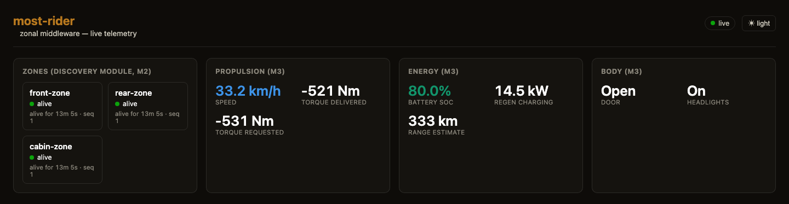
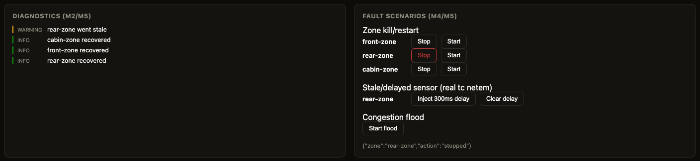
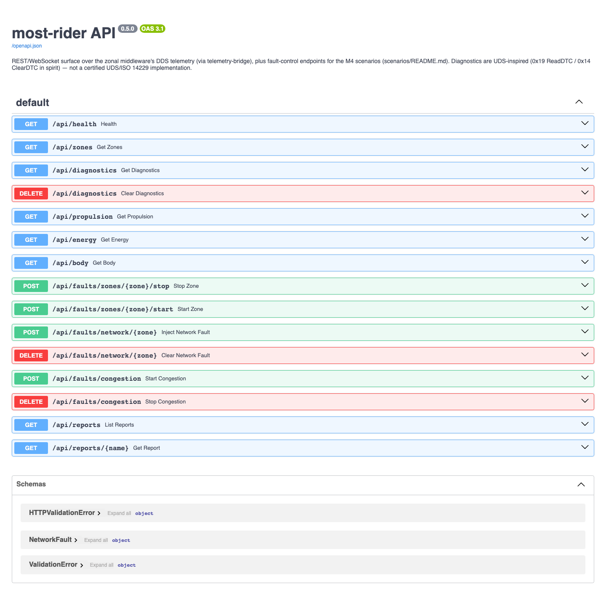

Crosscheck-built prototype · RV Tech (Rivian + Volkswagen) briefing
most-rider
A zonal automotive middleware prototype — built by Crosscheck orchestrating multiple LLM providers, with the repository itself standing as the evidence for both claims.
Generated from the project's own committed reports and crosscheck/ledger.jsonl — every figure below traces to a file in the repository.
$5.82
Total metered Crosscheck spend — 628,775 tokens, 4 tool calls, across all 8 milestones
9
Milestones shipped (M0–M8)
3/3
Fault scenarios verified live
9
ADRs with dissent preserved
73μs
Best measured p50 latency

The live dashboard at localhost:8282 — zone health, propulsion/energy telemetry, all fed over WebSocket from real DDS traffic.
Executive summary §1
RV Tech's central technical challenge is the shift from domain-based ECUs to zonal, service-oriented vehicle architecture. This project prototypes that shift end-to-end: four zones communicating over Eclipse Cyclone DDS, a discovery module that detects zone loss within about a second, a powertrain/energy simulation, three independently-verified fault scenarios, a REST/WebSocket/OpenAPI surface, and a live dashboard — built using only free, open-source components.
Every claim in this document is scoped, measured, and reproducible from a command in the repository. Nothing here is presented as safety-qualified or production-ready; see §7 for the full, deliberately unflattering list of what would need to change before it could be.
The other half of the story is cost. $5.82 of metered multi-model Crosscheck spend covers the entire project — 90% of it in a single pre-implementation planning session whose decisions held for all eight milestones that followed with zero rework. Section §6 gives the full, honest accounting, including what this project explicitly does not claim to have measured.
Architecture §2 · M0–M2
$5.24
Crosscheck spend for this section — the pre-implementation flight-plan debate (confer + plan + debate, 5-provider panel). Zero rework since.
Front, rear, and cabin zones publish heartbeats and vehicle-domain signals over DDS; central hosts a discovery module that tracks zone liveliness and republishes topology/diagnostic events. Two services (propulsion/energy, body) ride the same bus. A C++ telemetry bridge is the only DDS participant on the API side; a Python FastAPI service reads its snapshot and serves the dashboard and REST/WebSocket API — a language split forced by a real platform gap (the official cyclonedds Python package has no linux/arm64 wheel), not a preference.
front-zone
rear-zone
cabin-zone
HeartBeat + CapabilityAnnounce (DDS)
central — discovery module
TopologyState + DiagnosticEvent
energy-service
body-service
telemetry-bridge (C++)
api-bridge (Python/FastAPI)
REST + WebSocket + OpenAPI · :8282
Decisions that held
- Transport: Eclipse Cyclone DDS. Fast DDS and vsomeip considered and rejected by panel debate — ADR-0001.
- The #1 risk, solved on day one: DDS multicast discovery breaks across Docker's bridge network. Every provider on the planning panel flagged this independently; it was solved with explicit unicast peers before a single container existed — ADR-0002.
- One zone binary, not one per zone —
zone-runtime is instantiated three times via config; only central is architecturally distinct — ADR-0004.
- Priority stack scoped to 2 of 4 layers from the start — app-level traffic classes + DDS QoS built; DSCP/tc network enforcement named as stretch and never attempted as core scope — ADR-0006.
Why this matters: $5.24 spent once, correctly, on the highest-leverage decisions meant eight subsequent milestones never had to re-open a settled architectural question.
Vehicle services & fault scenarios §3 · M3–M4
$0
Crosscheck spend for this section — single-model execution against the M0 architecture, no additional multi-model debate needed.
The powertrain/energy service runs a deterministic 90-second drive cycle — speed defined as a direct formula, torque as its exact derivative, so it is exactly reproducible and was independently re-derived in Python for verification (922/922 samples matched). Regenerative braking is real in the data: battery state of charge visibly increases during the deceleration half of the cycle.
Three fault scenarios, each independently verified by actually running it
| Scenario | Mechanism | Result |
|---|
| Zone kill/restart | docker compose stop/start | Central detects staleness in ~1s, recovery confirmed |
| Stale/delayed sensor | Real tc netem network delay, not an app-level fake | Injected 300ms delay measured as +304,548μs — within 0.1% of the injected value |
| Congestion-with-priority-survival | A real flood process + priority QoS toggle | p99 454.8μs (priority on) vs. 839.9μs (off) under an identical flood |

Captured live: the dashboard's diagnostics log and fault-control panel reacting in real time to a zone being stopped and restarted — this is an actual browser screenshot, not a mockup.
Honest caveat, not smoothed over: priority QoS improved the 99th-percentile latency but made the far tail worse (max latency 30.6ms with priority on vs. 8.6ms off) — likely RELIABLE-QoS retransmission stalls. Disclosed in the report, not hidden.
Benchmark matrix §4 · M7
$0
The native/Docker benchmark tooling itself: single-model execution, no Crosscheck call.
Baseline latency — p50, by run (microseconds)
golden-run-1 (docker-compose)123.0μs
golden-run-2 (docker-compose)105.0μs
native-macos-arm64 (OS-confounded)156.0μs
linux-single-container (isolated)73.0μs
Bars scaled to the slowest run (native, 156μs). The single-container run isolates bridge-network overhead specifically (same OS/Docker daemon as the baseline); the native run also changes OS — disclosed as confounded, not presented as clean.
Congestion-with-priority-survival — p99, by phase (microseconds)
Baseline (no flood)498.1μs
Flood, no priority QoS839.9μs
Flood, priority QoS on454.8μs
Under an identical 3000Hz flood, priority QoS held p99 close to the unloaded baseline. Full stats, environment disclosure, and the far-tail caveat above: benchmarks/reports/congestion-survival-summary.md.
An open question, disclosed rather than resolved
central measured ~100% CPU utilization even under this light workload during resource capture. This is left as an open question — Cyclone DDS's internal receive-thread model plausibly favors latency over CPU efficiency by design, but that is a hypothesis, not a verified explanation. ADR-0009.
API surface

Every capability above is exposed via a documented REST/WebSocket API, auto-generated at /docs.
The Crosscheck case study §5
$5.82
Total across the entire project — recomputed directly from crosscheck/ledger.jsonl for this document
| Call | Tool | Tokens | Cost |
|---|
Flight-plan confer --super (5 providers) | confer | 23,625 | $0.4744 |
Flight-plan plan --thorough --super (5-round debate) | plan | 423,348 | $3.5144 |
Flight-plan debate --thorough --super (3-round debate) | debate | 108,199 | $1.2499 |
| M7 executive-summary delegation | create_cheap | 73,603 | $0.5833 |
| Total metered | 4 calls | 628,775 | $5.8220 |
Nine additional milestone entries (M0 scaffolding through M7's native/resource benchmarks) are logged as single-pass, primary-session work — real engineering, not separately metered. See below.
Where the $5.24 planning spend went
90% of all spend happened in one sitting, before implementation began, and is the reason almost nothing needed re-deciding across the eight milestones that followed — see §2 for the specific decisions it bought.
What $0.58 bought: a caught failure, not a clean success
Delegating the benchmark executive summary to create_cheap cost $0.58 for one page — considerably more than "cheap" suggests, since the pipeline ran a full 7-provider panel twice (scope and review) around a 7-node DAG. An internal step silently failed to read its attached source documents; the pipeline's own review layer (a separate reviewer pass) caught this and issued a "do not ship this" verdict, citing unsourced numbers and placeholder gaps. The flawed draft was discarded and the summary rewritten directly. That is the finding worth keeping — the safety net worked, on a real failure.
What this case study does not claim
No session-level token metering exists for the nine milestones of single-model implementation work — a real, disclosed accounting gap, not glossed over.
No measured baseline exists. The project's own honesty rules require replaying a representative task through a single premium model before publishing any "tokens saved" percentage. That replay was never run, so no such percentage appears anywhere in this project.
What the ledger does prove is not a cost saving — an audit trail. Every architectural decision traces to a named ADR; every ADR traces to a specific multi-model debate (dissent preserved verbatim) or an explicit single-model routing note. Full detail: crosscheck/reports/case-study.md.
Service catalog §6
$0
Documentation for already-built services — single-pass.
Discovery module
Zone health tracking, topology, diagnostics — hosted inside central.
Propulsion
Torque/speed drive-cycle signal, analytically reproducible.
Energy
Battery SoC, power draw, range estimate, real regen braking.
Body
Door/headlight demo beat — mixed service-class proof.
Diagnostics
UDS-inspired event log via the API — not certified UDS.
Limitations & productionization §7
Every gap below was deferred deliberately, with a linked ADR explaining why. Full detail: docs/PRODUCTIONIZATION.md.
- Security: DDS has no authentication;
api-bridge's fault-control endpoints require Docker socket access (root-equivalent), mitigated only by zone-allowlisting and a localhost-only assumption.
- Priority stack: layers 3-4 (real network-level traffic enforcement via DSCP/tc) not built.
- Protocol breadth: SOME/IP, ROS 2, Kubernetes, hardware-in-the-loop, multi-host deployment all explicitly out of scope.
- Measurement rigor: single-host only; no payload/message-size sweep; no dedicated N-repetition confidence intervals; the ~100% CPU finding is unexplained.
- Safety: nothing here is safety-qualified. No ISO 26262 process was followed. This repeats throughout the project's own documentation, deliberately.